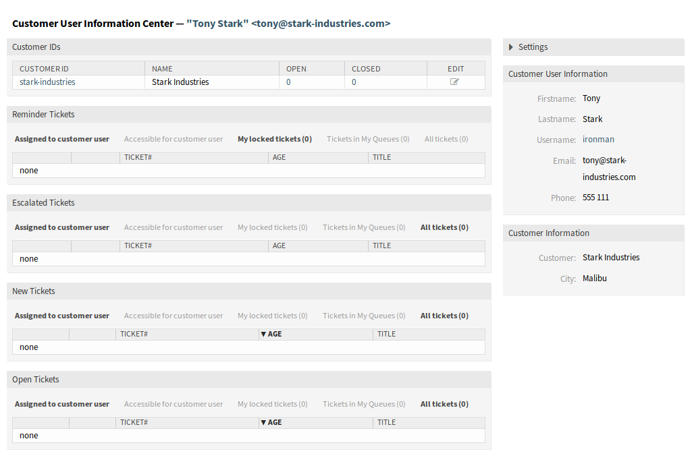
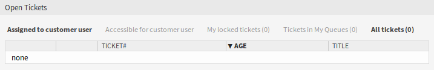

客户用户信息中心。¶
客户用户信息中心是一个仪表板，显示属于客户用户的所有相关工单和客户。 此仪表板与服务人员仪表板具有相同的目的：一目了然地查看所有相关信息。
使用此屏幕可访问客户用户仪表板。 仪表板位于 客户 菜单的 客户用户信息中心 菜单项中。
管理客户用户工单¶
点击 客户用户信息中心 菜单项将打开模态搜索对话框以搜索客户用户。 此处至少需要输入两个字符。

客户用户搜索对话框
注解
也可以使用通配符（*）。 输入两个星号（**）以列出所有客户用户。
选择客户用户后，将打开 客户用户信息中心 仪表板。 仪表板包含许多小部件。
注解
可以通过拖放重新排列小部件的顺序，并且可以使用每个小部件右上角的关闭图标删除小部件。
参见
有关管理小部件的更多详细说明，请参见 仪表板 章节。

客户用户信息中心 仪表板
客户用户信息中心内容小部件¶
客户ID 小部件用于列出客户用户所属的所有客户。 可以直接从小部件编辑客户并查看详细信息。

客户ID 小部件
若要编辑一个客户：
- 点击表格最后一列中的铅笔图标。
- 修改字段。
- 点击 保存 或 保存并完成 按钮。
若要查看一个客户的详细信息：
- 点击一个客户的名称。
- 在 客户信息中心 中查看客户用户和所有相关工单。
若要搜索一个客户的工单：
- 单击 处理中 或 已关闭 列中的数字。
- 在新的屏幕中查找需要的工单。
以下小组件显示与客户用户相关的工单。
每个工单小部件都有自己的显示过滤器：
- 分配给客户用户：分配给客户用户的工单。
- 客户用户可访问：客户用户可访问的工单。
- 我锁定的工单：由当前服务人员锁定的工单。
- 我的队列中的工单：在 个人偏好设置 队列中选择的工单。
- 所有工单：此类小部件中的所有工单。
提醒的工单 小部件列出了挂起的工单。 挂起的的工单是服务人员要处理的且提醒时间即将到期的集合。

提醒的工单 小部件
升级的工单 小部件列出了已升级的工单。 已升级的工单是在服务级别协议中设置的时间之后，因此需要立即处理它们。

升级的工单 小部件
新的工单 小部件列出了最近创建的工单。 新工单尚未由服务人员处理。

新的工单 小部件
处理中的工单 小部件列出了打开的票证。处理中的工单代表服务人员当前完成的工作。

处理中的工单 小部件